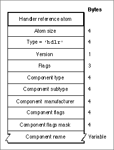

Handler Reference Atoms
The handler reference atom specifies the component that is to interpret a media's data. This component is called a media handler. (See the chapter "Component Manager" in Inside Macintosh: More Macintosh Toolbox for more information about components.)
Figure 4-11 shows the layout of a handler reference atom.Figure 4-11 The layout of a handler reference atom

You define a handler reference atom by specifying these elements:
- Size. The number of bytes in this handler reference atom.
- Type. The type of the data (defined by the 'hdlr' atom type) in the handler reference atom.
- Flags. A 1-byte specification of the version of this handler information.
- Version. A 3-byte space for future handler information flags.
- Component type. A four-character code that identifies the type of the media handler. All components of a particular type must support a common set of functions. Examples of component types are
'mhlr'and'dhlr'.- Component subtype. A four-character code that identifies the type of the media handler. Different types of a component type may support additional features or provide interfaces that extend beyond the standard functions for a given component type value. For media handlers, this field defines the type of data--for example,
'vide'or'soun'.- Component manufacturer. A four-character code that identifies the manufacturer of this media handler. This field allows for further differentiation between individual components. For example, components made by a specific manufacturer may support an extended feature set.
- Component flags. A 32-bit field that provides additional information about a particular media handler. The most significant 8 bits are reserved for use by the Component Manager and provide both static and dynamic information
about the component.- Component flags mask. A 32-bit field that indicates which flags in the component mask are relevant to a particular search operation. These flags are used when searching for a handler component.
- Component name. A Pascal string that specifies the name of the component--that is, the original handler used when this movie was created.